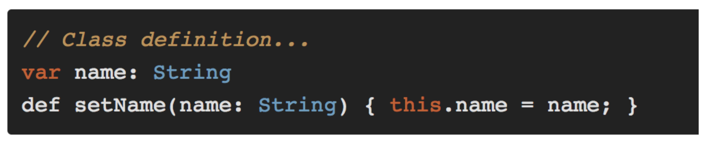
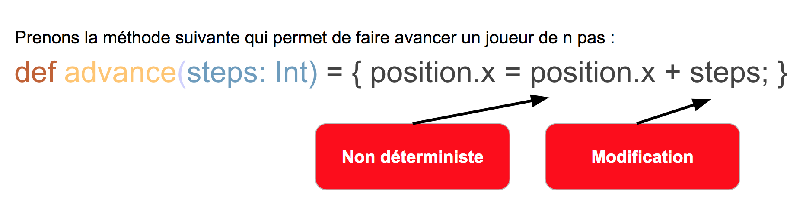
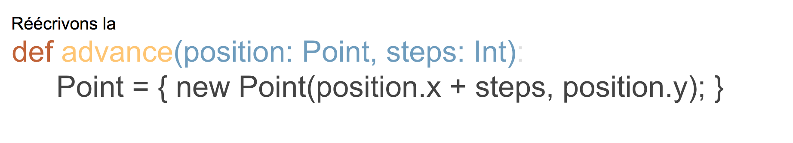

JOUR 1
- Les grands principes des tests
- Pyramide des tests
- Résolutions de nouvelle année
- Tester unitairement une application Java
- Principes
- Live demo
Les grands principes
des tests unitaires
FIRST
- [F]ast
- [I]solated
- [R]epeatable
- [S]elf-validating
- [T]imely
FIRST
[F]ast
Les tests unitaires doivent être rapides !
Si un test prend 200ms, combien de temps pour en jouer 2000 ?
6,5 minutes... sur votre poste de développeur
FIRST
[F]ast
Eviter les dépendances externes:
- Base de données
- Système de fichiers
- WebServices externes
- Appel réseaux
- Appel système (ex: getHostName)
FIRST
[I]solated
Ne jamais écrire de tests dépendants d'autres tests
- Risque de fausses alarmes
- Difficulté à remonter la chaîne en cas d'erreur
Dans le meilleur des mondes, on peut jouer ses tests
- Dans n'importe quel ordre
- N'importe quand
FIRST
[I]solated
Single Responsibility Principle (SOLID)
- Une classe doit être petite
- Une classe répond à un besoin unique
Si vos méthodes de tests peuvent échouer
pour plusieurs raisons, alors découper les en plusieurs méthodes
FIRST
[R]epeatable
Un test répétable doit fournir toujours le même résultat avec les mêmes entrées:
- Isoler vos tests de l'environnement extérieur hors de votre contrôle
- Mocker les objets qui vous échappe
- Utiliser une base de données InMemory
- Diviser pour régner
FIRST
[R]epeatable // Effet de bord
On nomme effet de bord l’utilisation (en lecture ou écriture), par une fonction, de toute variable qui est en dehors de son contexte local.
FIRST
[R]epeatable // Effet de bord
 
FIRST
[S]elf-validating
Pas d'interprétation manuelle des résulstats
- Gaspillage de temps
- Source des erreurs
Tout doit être automatisé
- Eviter les bidouilles sur les données avant lancement
- Garder les bases InMemory comme dernière cartouche
FIRST
[T]imely
Vous devez pouvoir les jouer n'importe quand !
- Pas de dépendances externes
- Attention à manipulation des dates !
FIRST
Tools

Pyramide des tests

Bonnes pratiques
Il est extrêmement facile d'écrire de mauvais tests unitaires qui ajoutent très peu de valeur à un projet tout en gonflant le coût des changements de code astronomiquement
Les tests unitaires n'ont pas vocation à vous aider à des bugs complexes ou des régressions métiers
Les tests unitaires ne sont là que pour tester ders morceaux de code indépendants
Les tests unitaires doivent être vus comme un partie du processus de design de l'application, cf TDD
Prouver que deux composants A et B fonctionnent ne prouvent pas qu'ils vont fonctionner ensemble

Les tests d'intégrations sont là pour valider l'ensemble fonctionne
Tester une chose à la fois
Exemple d'une méthode qui prend deux paramètres et retourne une valeur
- Si premier paramètre est nul alors InvalidParameterException
- Si second paramètre est nul alors InvalidParameterException
- Si les deux paramètres sont nuls alors InvalidParameterException
- Si tout est bon, alors faire l'évaluation
Mais encore...
- Supprimer les tests qui n'ont pas de sens
- Ne faites pas trop d'assertions
- N'utiliser pas @Ignore ou Maven skipTests
- N'utiliser pas de membres statiques
- Ne rien afficher durant les tests unitaires
- Remplir les paramètres d'assertion dans le bon ordre
Gestion des exceptions
Pas de try...catch() { assertion } mais
@Test(expected=SomeDomainSpecificException.SubException.class)
Règle de nommage
Soyez clair avec vous et vos collègues
- TestCreateEmployee_NullId_ShouldThrowException
- TestCreateEmployee_NegativeId_ShouldThrowException
- TestCreateEmployee_DuplicateId_ShouldThrowException
- TestCreateEmployee_ValidId_ShouldPass
Mauvaises pratiques
Il est extrêmement facile d'écrire de mauvais tests unitaires qui ajoutent très peu de valeur à un projet tout en gonflant le coût des changements de code astronomiquement
Les tests passent mais ne testent pas la fonctionnalité
Tester plusieurs choses avec plusieurs assertions
Trop de préparations
- Créer l'utlisateur
- Définir les permissions sur l'utilisateur
- Créer la réunion
- Définir les propriétés de la réunion
- [TEST] Joindre l'utilisateur à la réunion
- Echec/Success
Ne tester que sur son poste
Mockito
La guerre des Mocks
Ajout des dépendances Maven
org.springframework.boot
spring-boot-starter
1.3.1.RELEASE
org.springframework.boot
spring-boot-starter-test
1.3.1.RELEASE
test
org.mockito
mockito-core
2.8.9
Un service de base comme exemple
@Service
public class NameService {
public String getUserName(String id) {
return "Real user name";
}
}
Injecté ainsi dans un autre service
@Service
public class UserService {
private NameService nameService;
@Autowired
public UserService(NameService nameService) {
this.nameService = nameService;
}
public String getUserName(String id) {
return nameService.getUserName(id);
}
}
Exemple IDE
@SpringBootApplication
public class MocksApplication {
public static void main(String[] args) {
SpringApplication.run(MocksApplication.class, args);
}
}
Configuration de test
@Profile("test")
@Configuration
public class NameServiceTestConfiguration {
@Bean
@Primary
public NameService nameService() {
return Mockito.mock(NameService.class);
}
}
Classe de test
@ActiveProfiles("test")
@RunWith(SpringJUnit4ClassRunner.class)
@SpringBootTest(classes = MocksApplication.class)
public class UserServiceTest {
@Autowired
private UserService userService;
@Autowired
private NameService nameService;
@Test
public void whenUserIdIsProvided_thenRetrievedNameIsCorrect() {
Mockito.when(nameService.getUserName("SomeId")).thenReturn("Mock user name");
String testName = userService.getUserName("SomeId");
Assert.assertEquals("Mock user name", testName);
}
}
Ecrire des tests
avec Spring 1.4 et 1.5
Spring 1.4
- Sorti en juillet 2016
- Evolutions importantes pour les tests
- De nombreuses classes antérieures à 1.4 ont été supprimées en 1.5
Modification POM.xml
org.springframework.boot
spring-boot-starter-test
test
Configuration du test en 1.3
@RunWith(SpringJUnit4ClassRunner.class)
@SpringApplicationConfiguration(classes = DemoApplication.class)
@WebAppConfiguration
public class DemoControllerTest {
// ...
}
Depuis SpringBoot 1.4
@RunWith(SpringRunner.class)
@SpringBootTest
public class DemoControllerTest {
// ...
}
Conversion 1/2
@SpringApplicationConfiguration(classes=MyConfig.class) @SpringBootTest(classes=MyConfig.class)@ContextConfiguration( classes=MyConfig.class, loader=SpringApplicationContextLoader.class) @SpringBootTest(classes=MyConfig.class)@IntegrationTest @SpringBootTest(webEnvironment=WebEnvironment.NONE)
Conversion 2/2
@IntegrationTest + @WebAppConfiguration @SpringBootTest(webEnvironment=WebEnvironment.DEFINED_PORT)@WebIntegrationTest @SpringBootTest(webEnvironment=WebEnvironment.DEFINED_PORT)@RunWith(SpringJUnit4ClassRunner.class) @RunWith(SpringRunner.class)
Gestion des Mocks 1.3
@RunWith(SpringJUnit4ClassRunner.class)
@SpringApplicationConfiguration(classes = DemoApplication.class)
@WebAppConfiguration
public class DemoControllerTest {
private MockMvc mockMvc;
@Mock
private DemoService demoService;
@InjectMocks
private DemoController demoController;
@Before
public void setUp() {
Mockito.initMocks(this);
this.mockMvc = MockMvcBuilders.standaloneSetup(demoController).build();
Mockito.when(demoService.call()).thenReturn(42);
}
}
Gestion des Mocks 1.4
@MockBean
@RunWith(SpringRunner.class)
@SpringBootTest
public class DemoControllerTest {
private MockMvc mockMvc;
@MockBean
private DemoService demoService;
@Autowired
private DemoController demoController;
@Before
public void setUp() {
this.mockMvc = MockMvcBuilders.standaloneSetup(demoController).build();
Mockito.when(demoService.call()).thenReturn(42);
}
}
Ou bien encore ...
@WebMvcTest
@RunWith(SpringRunner.class)
@WebMvcTest(DemoController.class)
public class DemoControllerTest {
@Autowired
private MockMvc mockMvc;
@MockBean
private DemoService demoService;
@Before
public void setUp() {
Mockito.when(demoService.call()).thenReturn(42);
}
}
Mocker c'est aussi et surtout les Beans
@RunWith(SpringRunner.class)
@SpringBootTest(webEnvironment = WebEnvironment.RANDOM_PORT)
public class SampleTestApplicationWebIntegrationTests {
@MockBean
private VehicleDetailsService vehicleDetailsService;
@Before
public void setup() {
given(this.vehicleDetailsService.
getVehicleDetails("123")
).willReturn(
new VehicleDetails("Honda", "Civic"));
}
}
- Mocks sont resétés entre les tests
- Différence avec @SpyBean